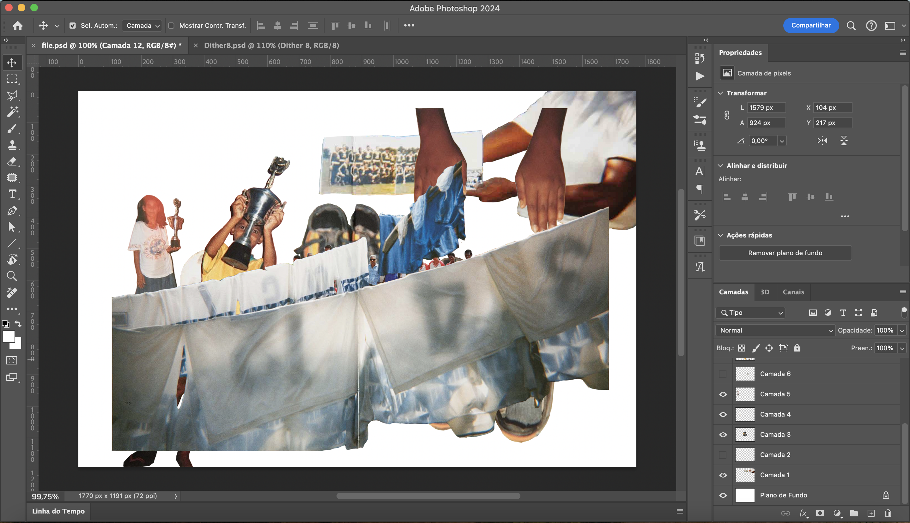

I love coding, and I tend to get ahead of myself by jumping to the technical part before really defining what I’m actually going to make. I don’t want to supress this excitement, it can lead to great things, plus it’s a good thing to be excited about what I’m making. I just want to learn to balance the technical and the conceptual parts of my process.
One way I’ve achieved this is by timing it. Keeping track of the ideas that come up for the technical part by noting them down or making quick experiments, without letting them take over the whole process (for the moment).
It’s also helped to be mindful of the tools I use for what, meaning consciously using other programmes to experiment and only writing code when I want to test an interactive mechanic. In other words, only letting myself code something meaningful when an idea has already been formed and experimented with through other means.
These are some screen captures to illustrate this way of working:
